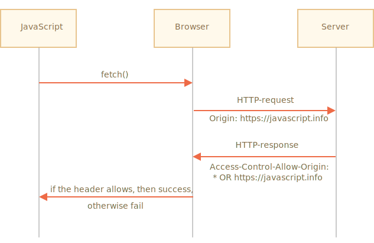
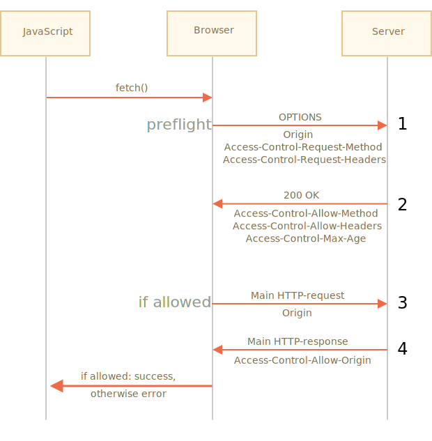

如果我们向另一个网站发送 fetch 请求，则该请求可能会失败。
例如，让我们尝试向 http://example.com 发送 fetch 请求：
try {
await fetch('http://example.com');
} catch(err) {
alert(err); // fetch 失败
}正如所料，获取失败。
这里的核心概念是 源（origin）—— 域（domain）/端口（port）/协议（protocol）的组合。
跨源请求 —— 那些发送到其他域（即使是子域）、协议或端口的请求 —— 需要来自远程端的特殊 header。
这个策略被称为 "CORS"：跨源资源共享（Cross-Origin Resource Sharing）。
CORS 的存在是为了保护互联网免受黑客攻击。
说真的，在这说点儿题外话，讲讲它的历史。
多年来，来自一个网站的脚本无法访问另一个网站的内容。
这个简单有力的规则是互联网安全的基础。例如，来自 hacker.com 的脚本无法访问 gmail.com 上的用户邮箱。基于这样的规则，人们感到很安全。
在那时候，JavaScript 并没有任何特殊的执行网络请求的方法。它只是一种用来装饰网页的玩具语言而已。
但是 Web 开发人员需要更多功能。人们发明了各种各样的技巧去突破该限制，并向其他网站发出请求。
其中一种和其他服务器通信的方法是在那里提交一个 <form>。人们将它提交到 <iframe>，只是为了停留在当前页面，像这样：
<!-- 表单目标 -->
*!*
<iframe name="iframe"></iframe>
*/!*
<!-- 表单可以由 JavaScript 动态生成并提交 -->
*!*
<form target="iframe" method="POST" action="http://another.com/…">
*/!*
...
</form>因此，即使没有网络方法，也可以向其他网站发出 GET/POST 请求，因为表单可以将数据发送到任何地方。但是由于禁止从其他网站访问 <iframe> 中的内容，因此就无法读取响应。
确切地说，实际上有一些技巧能够解决这个问题，这在 iframe 和页面中都需要添加特殊脚本。因此，与 iframe 的通信在技术上是可能的。现在我们没必要讲其细节内容，我们还是让这些古董代码不要再出现了吧。
另一个技巧是使用 script 标签。script 可以具有任何域的 src，例如 <script src="http://another.com/…">。也可以执行来自任何网站的 script。
如果一个网站，例如 another.com 试图公开这种访问方式的数据，则会使用所谓的 "JSONP (JSON with padding)" 协议。
这是它的工作方式。
假设在我们的网站，需要以这种方式从 http://another.com 网站获取数据，例如天气：
首先，我们先声明一个全局函数来接收数据，例如 gotWeather。
// 1. 声明处理天气数据的函数
function gotWeather({ temperature, humidity }) {
alert(`temperature: ${temperature}, humidity: ${humidity}`);
}然后我们创建一个特性（attribute）为 src="http://another.com/weather.json?callback=gotWeather" 的 <script> 标签，使用我们的函数名作为它的 callback URL-参数。
let script = document.createElement('script');
script.src = `http://another.com/weather.json?callback=gotWeather`;
document.body.append(script);远程服务器 another.com 动态生成一个脚本，该脚本调用 gotWeather(...)，发送它想让我们接收的数据。
// 我们期望来自服务器的回答看起来像这样：
gotWeather({
temperature: 25,
humidity: 78
});当远程脚本加载并执行时，gotWeather 函数将运行，并且因为它是我们的函数，我们就有了需要的数据。
这是可行的，并且不违反安全规定，因为双方都同意以这种方式传递数据。而且，既然双方都同意这种行为，那这肯定不是黑客攻击了。现在仍然有提供这种访问的服务，因为即使是非常旧的浏览器它依然适用。
不久之后，网络方法出现在了浏览器 JavaScript 中。
起初，跨源请求是被禁止的。但是，经过长时间的讨论，跨源请求被允许了，但是任何新功能都需要服务器明确允许，以特殊的 header 表述。
有两种类型的跨源请求：
顾名思义，简单的请求很简单，所以我们先从它开始。
一个 简单的请求 是指满足以下两个条件的请求：
Accept，Accept-Language，Content-Language，Content-Type 的值为 application/x-www-form-urlencoded，multipart/form-data 或 text/plain。任何其他请求都被认为是“非简单请求”。例如，具有 PUT 方法或 API-Key HTTP-header 的请求就不是简单请求。
本质区别在于，可以使用 <form> 或 <script> 进行“简单请求”，而无需任何其他特殊方法。
因此，即使是非常旧的服务器也能很好地接收简单请求。
与此相反，带有非标准 header 或者例如 DELETE 方法的请求，无法通过这种方式创建。在很长一段时间里，JavaScript 都不能进行这样的请求。所以，旧的服务器可能会认为此类请求来自具有特权的来源（privileged source），“因为网页无法发送它们”。
当我们尝试发送一个非简单请求时，浏览器会发送一个特殊的“预检（preflight）”请求到服务器 —— 询问服务器，你接受此类跨源请求吗？
并且，除非服务器明确通过 header 进行确认，否则非简单请求不会被发送。
现在，我们来详细介绍它们。
如果一个请求是跨源的，浏览器始终会向其添加 Origin header。
例如，如果我们从 https://javascript.info/page 请求 https://anywhere.com/request，请求的 header 将会如下：
GET /request
Host: anywhere.com
*!*
Origin: https://javascript.info
*/!*
...正如你所见，Origin 包含了确切的源（domain/protocol/port），没有路径。
服务器可以检查 Origin，如果同意接受这样的请求，就会在响应中添加一个特殊的 header Access-Control-Allow-Origin。该 header 包含了允许的源（在我们的示例中是 https://javascript.info），或者一个星号 *。然后响应成功，否则报错。
浏览器在这里扮演受被信任的中间人的角色：
Origin。Access-Control-Allow-Origin，如果存在，则允许 JavaScript 访问响应，否则将失败并报错。
这是一个带有服务器许可的响应示例：
200 OK
Content-Type:text/html; charset=UTF-8
*!*
Access-Control-Allow-Origin: https://javascript.info
*/!*对于跨源请求，默认情况下，JavaScript 只能访问“简单” response header：
Cache-ControlContent-LanguageContent-TypeExpiresLast-ModifiedPragma访问任何其他 response header 都将导致 error。
请注意：列表中没有 `Content-Length` header！
该 header 包含完整的响应长度。因此，如果我们正在下载某些内容，并希望跟踪进度百分比，则需要额外的权限才能访问该 header（请见下文）。要授予 JavaScript 对任何其他 response header 的访问权限，服务器必须发送 Access-Control-Expose-Headers header。它包含一个以逗号分隔的应该被设置为可访问的非简单 header 名称列表。
例如：
200 OK
Content-Type:text/html; charset=UTF-8
Content-Length: 12345
API-Key: 2c9de507f2c54aa1
Access-Control-Allow-Origin: https://javascript.info
*!*
Access-Control-Expose-Headers: Content-Length,API-Key
*/!*有了这种 Access-Control-Expose-Headers header，此脚本就被允许读取响应的 Content-Length 和 API-Key header。
我们可以使用任何 HTTP 方法：不仅仅是 GET/POST，也可以是 PATCH，DELETE 及其他。
之前，没有人能够设想网页能发出这样的请求。因此，可能仍然存在有些 Web 服务将非标准方法视为一个信号：“这不是浏览器”。它们可以在检查访问权限时将其考虑在内。
因此，为了避免误解，任何“非标准”请求 —— 浏览器不会立即发出在过去无法完成的这类请求。即在它发送这类请求前，会先发送“预检（preflight）”请求来请求许可。
预检请求使用 OPTIONS 方法，它没有 body，但是有两个 header：
Access-Control-Request-Method header 带有非简单请求的方法。Access-Control-Request-Headers header 提供一个以逗号分隔的非简单 HTTP-header 列表。如果服务器同意处理请求，那么它会进行响应，此响应的状态码应该为 200，没有 body，具有 header：
Access-Control-Allow-Methods 必须具有允许的方法。Access-Control-Allow-Headers 必须具有一个允许的 header 列表。Access-Control-Max-Age 可以指定缓存此权限的秒数。因此，浏览器不是必须为满足给定权限的后续请求发送预检。
让我们用一个例子来一步步看一下它是怎么工作的，对于一个跨源的 PATCH 请求（此方法经常被用于更新数据）：
let response = await fetch('https://site.com/service.json', {
method: 'PATCH',
headers: {
'Content-Type': 'application/json',
'API-Key': 'secret'
}
});这里有三个理由解释为什么它不是一个简单请求（其实一个就够了）：
PATCHContent-Type 不是这三个中之一：application/x-www-form-urlencoded，multipart/form-data，text/plain。API-Key header。在发送我们的请求前，浏览器会自己发送如下所示的预检请求：
OPTIONS /service.json
Host: site.com
Origin: https://javascript.info
Access-Control-Request-Method: PATCH
Access-Control-Request-Headers: Content-Type,API-KeyOPTIONS。/service.json。Origin —— 来源。Access-Control-Request-Method —— 请求方法。Access-Control-Request-Headers —— 以逗号分隔的“非简单” header 列表。服务应响应状态 200 和 header：
Access-Control-Allow-Methods: PATCHAccess-Control-Allow-Headers: Content-Type,API-Key。这将允许后续通信，否则会触发错误。
如果服务器将来期望其他方法和 header，则可以通过添加到列表中来预先允许它们：
200 OK
Access-Control-Allow-Methods: PUT,PATCH,DELETE
Access-Control-Allow-Headers: API-Key,Content-Type,If-Modified-Since,Cache-Control
Access-Control-Max-Age: 86400现在，浏览器可以看到 PATCH 在 Access-Control-Allow-Methods 中，Content-Type,API-Key 在列表 Access-Control-Allow-Headers 中，因此它将发送主请求。
此外，预检响应会缓存一段时间，该时间由 Access-Control-Max-Age header 指定（86400 秒，一天），因此，后续请求将不会导致预检。假设它们符合缓存的配额，则将直接发送它们。
预检成功后，浏览器现在发出主请求。这里的算法与简单请求的算法相同。
主请求具有 Origin header（因为它是跨源的）：
PATCH /service.json
Host: site.com
Content-Type: application/json
API-Key: secret
Origin: https://javascript.info服务器不应该忘记在主响应中添加 Access-Control-Allow-Origin。成功的预检并不能免除此要求：
Access-Control-Allow-Origin: https://javascript.info然后，JavaScript 可以读取主服务器响应了。
预检请求发生在“幕后”，它对 JavaScript 不可见。
JavaScript 仅获取对主请求的响应，如果没有服务器许可，则获得一个 error。默认情况下，由 JavaScript 代码发起的跨源请求不会带来任何凭据（cookies 或者 HTTP 认证（HTTP authentication））。
这对于 HTTP 请求来说并不常见。通常，对 http://site.com 的请求附带有该域的所有 cookie。但是由 JavaScript 方法发出的跨源请求是个例外。
例如，fetch('http://another.com') 不会发送任何 cookie，即使那些 (!) 属于 another.com 域的 cookie。
为什么？
这是因为具有凭据的请求比没有凭据的请求要强大得多。如果被允许，它会使用它们的凭据授予 JavaScript 代表用户行为和访问敏感信息的全部权力。
服务器真的这么信任这种脚本吗？是的，它必须显式地带有允许请求的凭据和附加 header。
要在 fetch 中发送凭据，我们需要添加 credentials: "include" 选项，像这样：
fetch('http://another.com', {
credentials: "include"
});现在，fetch 将把源自 another.com 的 cookie 和我们的请求发送到该网站。
如果服务器同意接受 带有凭据 的请求，则除了 Access-Control-Allow-Origin 外，服务器还应该在响应中添加 header Access-Control-Allow-Credentials: true。
例如：
200 OK
Access-Control-Allow-Origin: https://javascript.info
Access-Control-Allow-Credentials: true请注意：对于具有凭据的请求，禁止 Access-Control-Allow-Origin 使用星号 *。如上所示，它必须有一个确切的源。这是另一项安全措施，以确保服务器真的知道它信任的发出此请求的是谁。
从浏览器角度来看，有两种跨源请求：“简单”请求和其他请求。
简单请求 必须满足下列条件：
AcceptAccept-LanguageContent-LanguageContent-Type 的值为 application/x-www-form-urlencoded，multipart/form-data 或 text/plain。简单请求和其他请求的本质区别在于，自古以来使用 <form> 或 <script> 标签进行简单请求就是可行的，而长期以来浏览器都不能进行非简单请求。
所以，实际区别在于，简单请求会使用 Origin header 并立即发送，而对于其他请求，浏览器会发出初步的“预检”请求，以请求许可。
对于简单请求：
Origin header。Access-Control-Allow-Origin 为 * 或与 Origin 的值相同Access-Control-Allow-Origin 值与 Origin 的相同Access-Control-Allow-Credentials 为 true此外，要授予 JavaScript 访问除 Cache-Control，Content-Language，Content-Type，Expires，Last-Modified 或 Pragma 外的任何 response header 的权限，服务器应该在 header Access-Control-Expose-Headers 中列出允许的那些 header。
对于非简单请求，会在请求之前发出初步“预检”请求：
OPTIONS 请求发送到相同的 URL：Access-Control-Request-Method 有请求方法。Access-Control-Request-Headers 以逗号分隔的“非简单” header 列表。Access-Control-Allow-Methods 带有允许的方法的列表，Access-Control-Allow-Headers 带有允许的 header 的列表，Access-Control-Max-Age 带有指定缓存权限的秒数。